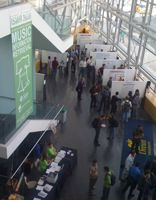

<?xml version="1.0" encoding="UTF-8"?>
<!-- generator="wordpress/2.3.1" -->
<rss version="2.0"
	xmlns:content="http://purl.org/rss/1.0/modules/content/"
	xmlns:wfw="http://wellformedweb.org/CommentAPI/"
	xmlns:dc="http://purl.org/dc/elements/1.1/"
	>

<channel>
	<title>ISMIR 2008</title>
	<link>http://ismir2008.ismir.net</link>
	<description>Ninth International Conference on Music Information Retrieval</description>
	<pubDate>Fri, 19 Sep 2008 21:27:01 +0000</pubDate>
	<generator>http://wordpress.org/?v=2.3.1</generator>
	<language>en</language>
			<item>
		<title>ISMIR 2008 has concluded</title>
		<link>http://ismir2008.ismir.net/content/66</link>
		<comments>http://ismir2008.ismir.net/content/66#comments</comments>
		<pubDate>Fri, 19 Sep 2008 21:25:54 +0000</pubDate>
		<dc:creator>ykim</dc:creator>
		
		<category><![CDATA[Uncategorized]]></category>

		<guid isPermaLink="false">http://ismir2008.ismir.net/content/66</guid>
		<description><![CDATA[
ISMIR 2008 has concluded. Our sincere thanks go out to all who contributed to the event!
&#160;
Any post-conference updates will be posted on this website. The full conference proceedings remain available through the Conference Program page. 
&#160;
See you in Kobe, Japan for ISMIR 2009!
&#160;
&#160;
]]></description>
			<content:encoded><![CDATA[<p><br />
ISMIR 2008 has concluded. Our sincere thanks go out to all who contributed to the event!</p>
<p>&nbsp;</p>
<p>Any post-conference updates will be posted on this website. The full conference proceedings remain available through the <a href="program/index.html">Conference Program</a> page. </p>
<p>&nbsp;</p>
<p>See you in Kobe, Japan for <a href="../ismir2009.ismir.net/index.html">ISMIR 2009!</a></p>
<p>&nbsp;</p>
<p>&nbsp;</p>
]]></content:encoded>
			<wfw:commentRss>http://ismir2008.ismir.net/content/66/feed</wfw:commentRss>
		</item>
		<item>
		<title>Best Student Paper Award Announced</title>
		<link>http://ismir2008.ismir.net/content/65</link>
		<comments>http://ismir2008.ismir.net/content/65#comments</comments>
		<pubDate>Thu, 18 Sep 2008 14:51:44 +0000</pubDate>
		<dc:creator>dpwe</dc:creator>
		
		<category><![CDATA[Uncategorized]]></category>

		<guid isPermaLink="false">http://ismir2008.ismir.net/content/65</guid>
		<description><![CDATA[The winner of the ISMIR 2008 Best Student Paper Award is:
On the Use of Sparse Time-Relative Auditory Codes for Music
  Pierre-Antoine Manzagol, Thierry Bertin-Mahieux and Douglas Eck
  (seesion 5b, page 603)

The best student paper award carries a prize of $300.  Congratulations to Pierre-Antione, Thierry, and Douglas!
About the ISMIR 2008 Best Student Paper [...]]]></description>
			<content:encoded><![CDATA[<p>The winner of the ISMIR 2008 Best Student Paper Award is:<br />
<UL><A HREF="papers/ISMIR2008_261.pdf">On the Use of Sparse Time-Relative Auditory Codes for Music</A><br />
  Pierre-Antoine Manzagol, Thierry Bertin-Mahieux and Douglas Eck<br />
  (seesion 5b, page 603)<br />
</UL></p>
<p>The best student paper award carries a prize of $300.  Congratulations to Pierre-Antione, Thierry, and Douglas!</p>
<p><i>About the ISMIR 2008 Best Student Paper Award:</i><br />
The award was selected by a panel of judges drawn from the conference organizers and program committee.  For consideration, the first author had to be a student at the time the paper was submitted, and the paper had to be presented at the conference by one of the authors (not necessarily the student author). Judging was based on both the paper and the conference presentations.  </p>
]]></content:encoded>
			<wfw:commentRss>http://ismir2008.ismir.net/content/65/feed</wfw:commentRss>
		</item>
		<item>
		<title>Local area and transportation information posted</title>
		<link>http://ismir2008.ismir.net/content/58</link>
		<comments>http://ismir2008.ismir.net/content/58#comments</comments>
		<pubDate>Fri, 12 Sep 2008 01:16:32 +0000</pubDate>
		<dc:creator>ykim</dc:creator>
		
		<category><![CDATA[philadelphia]]></category>

		<guid isPermaLink="false">http://ismir2008.ismir.net/content/58</guid>
		<description><![CDATA[The local area page has an interactive map (including street views) of the area surrounding the conference venue, highlighting restaurants and other points of interest.
A directions page is also available with instructions for getting to the conference venue via ground transportation.
]]></description>
			<content:encoded><![CDATA[<p>The <a href="local-2.html">local area page</a> has an interactive map (including street views)</a> of the area surrounding the conference venue, highlighting restaurants and other points of interest.</p>
<p>A <a href="directions-2.html">directions page</a> is also available with instructions for getting to the conference venue via ground transportation.</p>
]]></content:encoded>
			<wfw:commentRss>http://ismir2008.ismir.net/content/58/feed</wfw:commentRss>
		</item>
		<item>
		<title>Advanced registration closed</title>
		<link>http://ismir2008.ismir.net/content/55</link>
		<comments>http://ismir2008.ismir.net/content/55#comments</comments>
		<pubDate>Mon, 08 Sep 2008 14:02:02 +0000</pubDate>
		<dc:creator>ykim</dc:creator>
		
		<category><![CDATA[Uncategorized]]></category>

		<guid isPermaLink="false">http://ismir2008.ismir.net/content/55</guid>
		<description><![CDATA[Advance registration for ISMIR 2008 has closed. Onsite registration will be available (those registering onsite are not guaranteed admission to the conference banquet).
]]></description>
			<content:encoded><![CDATA[<p>Advance registration for ISMIR 2008 has closed. Onsite registration will be available (those registering onsite are not guaranteed admission to the conference banquet).</p>
]]></content:encoded>
			<wfw:commentRss>http://ismir2008.ismir.net/content/55/feed</wfw:commentRss>
		</item>
		<item>
		<title>Conference program updated</title>
		<link>http://ismir2008.ismir.net/content/51</link>
		<comments>http://ismir2008.ismir.net/content/51#comments</comments>
		<pubDate>Tue, 02 Sep 2008 21:13:16 +0000</pubDate>
		<dc:creator>ykim</dc:creator>
		
		<category><![CDATA[program]]></category>

		<guid isPermaLink="false">http://ismir2008.ismir.net/content/51</guid>
		<description><![CDATA[The Conference Program page now lists submissions to be presented during the Late-Breaking / Demo session of ISMIR 2008.
]]></description>
			<content:encoded><![CDATA[<p>The <a href="program/index.html">Conference Program page</a> now lists submissions to be presented during the Late-Breaking / Demo session of ISMIR 2008.</p>
]]></content:encoded>
			<wfw:commentRss>http://ismir2008.ismir.net/content/51/feed</wfw:commentRss>
		</item>
		<item>
		<title>Poster guidelines updated</title>
		<link>http://ismir2008.ismir.net/content/50</link>
		<comments>http://ismir2008.ismir.net/content/50#comments</comments>
		<pubDate>Tue, 02 Sep 2008 21:10:57 +0000</pubDate>
		<dc:creator>ykim</dc:creator>
		
		<category><![CDATA[program]]></category>

		<guid isPermaLink="false">http://ismir2008.ismir.net/content/50</guid>
		<description><![CDATA[The guidelines for poster presentations have been updated with information on poster board orientation (landscape) as well as suggestions for local printing of posters.
]]></description>
			<content:encoded><![CDATA[<p>The guidelines for poster presentations have been <a href="submit-2.html">updated</a> with information on <em>poster board orientation</em> (landscape) as well as suggestions for local printing of posters.</p>
]]></content:encoded>
			<wfw:commentRss>http://ismir2008.ismir.net/content/50/feed</wfw:commentRss>
		</item>
		<item>
		<title>Concert featuring music technology research</title>
		<link>http://ismir2008.ismir.net/content/47</link>
		<comments>http://ismir2008.ismir.net/content/47#comments</comments>
		<pubDate>Fri, 29 Aug 2008 21:58:42 +0000</pubDate>
		<dc:creator>ykim</dc:creator>
		
		<category><![CDATA[program]]></category>

		<guid isPermaLink="false">http://ismir2008.ismir.net/content/47</guid>
		<description><![CDATA[We are pleased to announce that ISMIR 2008 will include a special concert program on Wednesday, September 17, featuring the following performers:

Elaine Chew, University of Southern California
Members of the Princeton Laptop Orchestra (PLOrk), Princeton University

More details available on the Concert Page.
]]></description>
			<content:encoded><![CDATA[<p>We are pleased to announce that ISMIR 2008 will include a special concert program on Wednesday, September 17, featuring the following performers:</p>
<ul>
<li>Elaine Chew, <em>University of Southern California</em></li>
<li>Members of the Princeton Laptop Orchestra (PLOrk), <em>Princeton University</em>
</ul>
<p>More details available on the <a href="concert-2.html">Concert Page</a>.</p>
]]></content:encoded>
			<wfw:commentRss>http://ismir2008.ismir.net/content/47/feed</wfw:commentRss>
		</item>
		<item>
		<title>Conference proceedings available</title>
		<link>http://ismir2008.ismir.net/content/41</link>
		<comments>http://ismir2008.ismir.net/content/41#comments</comments>
		<pubDate>Thu, 28 Aug 2008 00:03:58 +0000</pubDate>
		<dc:creator>ykim</dc:creator>
		
		<category><![CDATA[proceedings]]></category>

		<guid isPermaLink="false">http://ismir2008.ismir.net/content/41</guid>
		<description><![CDATA[In order to keep registration costs as low as possible and to save paper, the proceedings for ISMIR 2008 will be distributed electronically at the conference (on a USB thumb drive). If you would like a printed version of the proceedings, you must order your own copy from our recommended print-on-demand supplier, Lulu.com (or print [...]]]></description>
			<content:encoded><![CDATA[<p>In order to keep registration costs as low as possible and to save paper, the proceedings for ISMIR 2008 will be distributed electronically at the conference (on a USB thumb drive). If you would like a printed version of the proceedings, you must order your own copy from our recommended print-on-demand supplier, Lulu.com (or print out your own copy by downloading the free pdf that is available at Lulu.com).</p>
<p>If you would like for a printed copy to be delivered to the conference, we strongly recommend that you <em>place your order by Tuesday September 2nd to ensure it arrives on site in time</em>. Please see the <a href="proceedings-2.html">Conference Proceedings page for more details</a>.</p>
<p><b>Update:</b> Direct links to all papers to be presented at ISMIR 2008 are available from the <a href="program/index.html">Conference Program page</a>.</p>
]]></content:encoded>
			<wfw:commentRss>http://ismir2008.ismir.net/content/41/feed</wfw:commentRss>
		</item>
		<item>
		<title>ISMIR 2008 invited and keynote speakers announced</title>
		<link>http://ismir2008.ismir.net/content/35</link>
		<comments>http://ismir2008.ismir.net/content/35#comments</comments>
		<pubDate>Thu, 14 Aug 2008 02:48:15 +0000</pubDate>
		<dc:creator>ykim</dc:creator>
		
		<category><![CDATA[program]]></category>

		<guid isPermaLink="false">http://ismir2008.ismir.net/content/35</guid>
		<description><![CDATA[We are pleased to announce our invited and keynote speakers for ISMIR 2008!

Invited speaker: Dmitri Tymoczko (Princeton University)
Keynote speaker: Jeanne Bamberger (MIT, UC Berkeley)

More details about the speakers and their presentations are available on the Invited and Keynote Speakers page.
]]></description>
			<content:encoded><![CDATA[<p>We are pleased to announce our invited and keynote speakers for ISMIR 2008!</p>
<ul>
<li>Invited speaker: <em>Dmitri Tymoczko</em> (Princeton University)
<li>Keynote speaker: <em>Jeanne Bamberger</em> (MIT, UC Berkeley)
</ul>
<p>More details about the speakers and their presentations are available on the <a href="keynote-2.html">Invited and Keynote Speakers</a> page.</p>
]]></content:encoded>
			<wfw:commentRss>http://ismir2008.ismir.net/content/35/feed</wfw:commentRss>
		</item>
		<item>
		<title>ISMIR 2008 in Philadelphia!</title>
		<link>http://ismir2008.ismir.net/content/1</link>
		<comments>http://ismir2008.ismir.net/content/1#comments</comments>
		<pubDate>Tue, 20 Nov 2007 19:14:06 +0000</pubDate>
		<dc:creator>admin</dc:creator>
		
		<category><![CDATA[philadelphia]]></category>

		<category><![CDATA[program]]></category>

		<guid isPermaLink="false">http://ismir2008.ismir.net/?p=1</guid>
		<description><![CDATA[The Call for Participation for ISMIR 2008 has now been posted online! This year&#8217;s call contains significant changes from those of previous years, so please review the document carefully.
]]></description>
			<content:encoded><![CDATA[<p>The <a href="cfp-2.html" title="Call for Participation">Call for Participation</a> for ISMIR 2008 has now been posted online! This year&#8217;s call contains significant changes from those of previous years, so please review the document carefully.</p>
]]></content:encoded>
			<wfw:commentRss>http://ismir2008.ismir.net/content/1/feed</wfw:commentRss>
		</item>
	</channel>
</rss>
